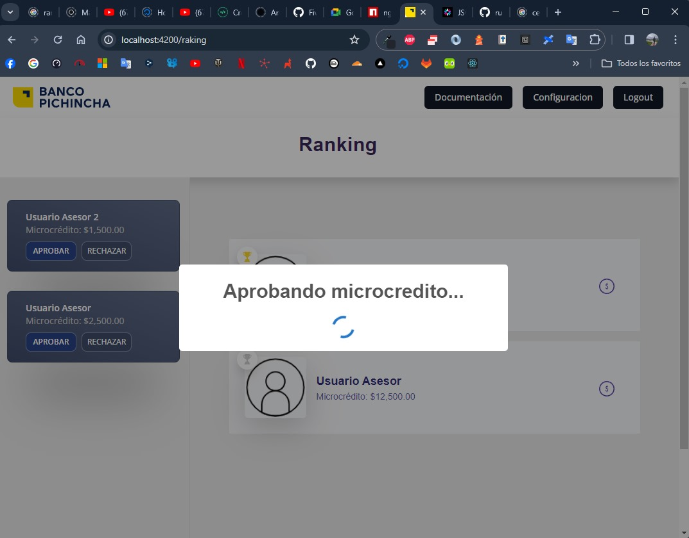

Introducción
RankingBank tiene como objetivo fundamental establecer un sistema eficaz para evaluar y reconocer el desempeño individual de los asesores de microcrédito en el ámbito bancario.
Iniciar sesión
1. Ir a la página ......2. Escribir el correo y contraseña

3. Click en ingresar

4. Listo
Aprobar microcrédito
1. En el listado lateral, se encuentran los créditos

2. Dar click en aprobar o rechazar microcrédito

2. Observar que se cambia el estado

3. Listo